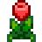
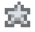
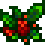

Na vida real · parte 2
E se os
festivais
fossem reais?
qual é o seu favorito? →
imagens geradas por IA · @segredosdovalley
13 de primaveraFestival do Ovo
 Caça aos ovos na praça e sementes de morango à venda
Caça aos ovos na praça e sementes de morango à vendaimagem gerada por IA · @segredosdovalley
24 de primaveraDança das Flores

Na floresta, a dança com o seu parimagem gerada por IA · @segredosdovalley
11 de verãoLuau
 Cada morador coloca um item na sopa do Governador
Cada morador coloca um item na sopa do Governadorimagem gerada por IA · @segredosdovalley
28 de verãoDança das Medusas-da-Lua
 À noite, as medusas brilham no mar da praia
À noite, as medusas brilham no mar da praiaimagem gerada por IA · @segredosdovalley
16 de outonoFeira do Vale do Orvalho

Jogos, roda da fortuna e exposição da sua colheitaimagem gerada por IA · @segredosdovalley
27 de outonoVéspera dos Espíritos
 Um labirinto à noite com prêmio no fim
Um labirinto à noite com prêmio no fimimagem gerada por IA · @segredosdovalley
8 de invernoFestival do Gelo
 Pesque 5 peixes no gelo pra vencer o Willy
Pesque 5 peixes no gelo pra vencer o Willyimagem gerada por IA · @segredosdovalley
25 de invernoFestival da Estrela Invernal

Amigo secreto: cada morador presenteia alguémimagem gerada por IA · @segredosdovalley
E agora?
Qual festival você
mais espera no ano?
ComentaVALEe eu faço a parte 3
Manda pro amigo que nunca perde um festival
salva e mostra pra quem joga